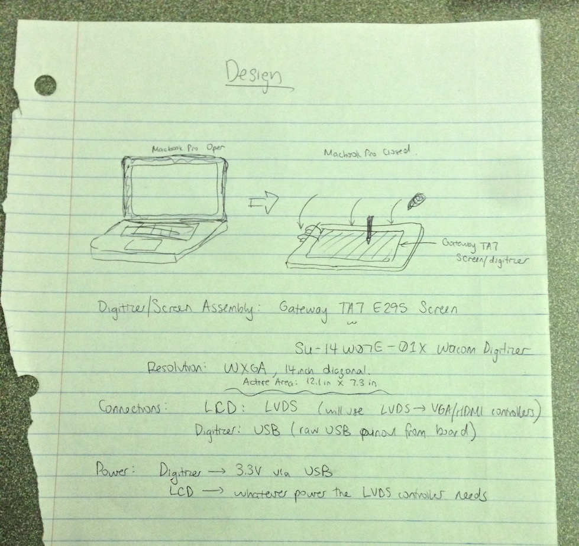
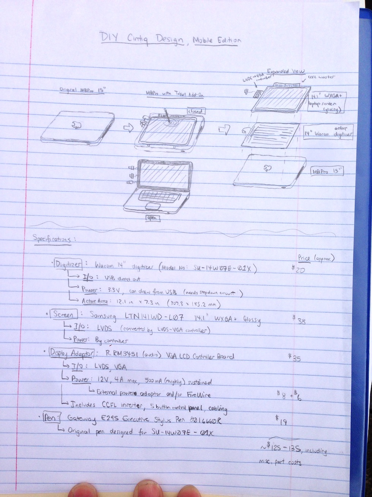
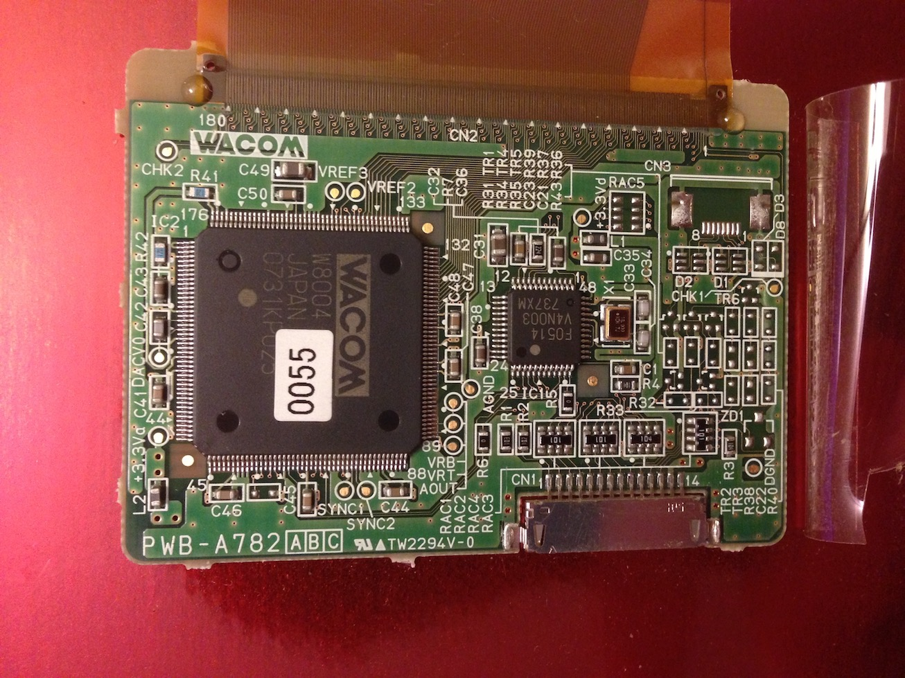
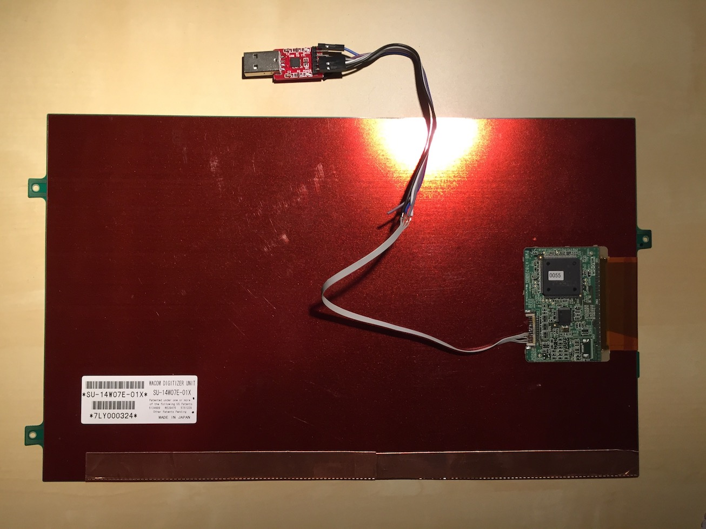
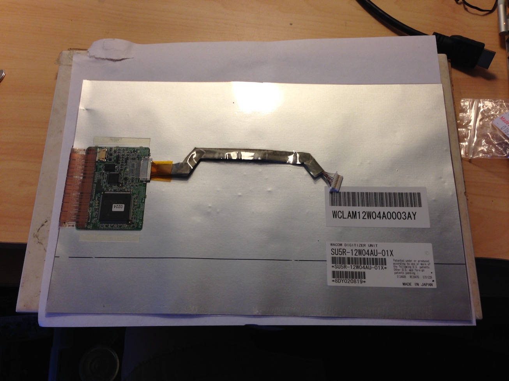
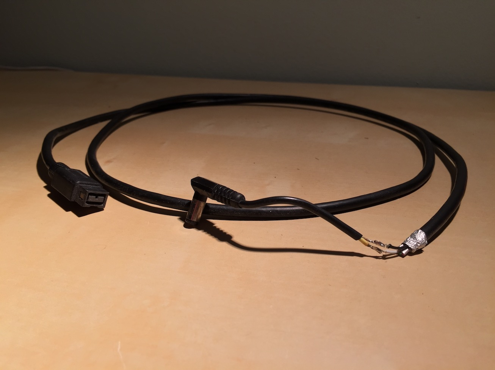
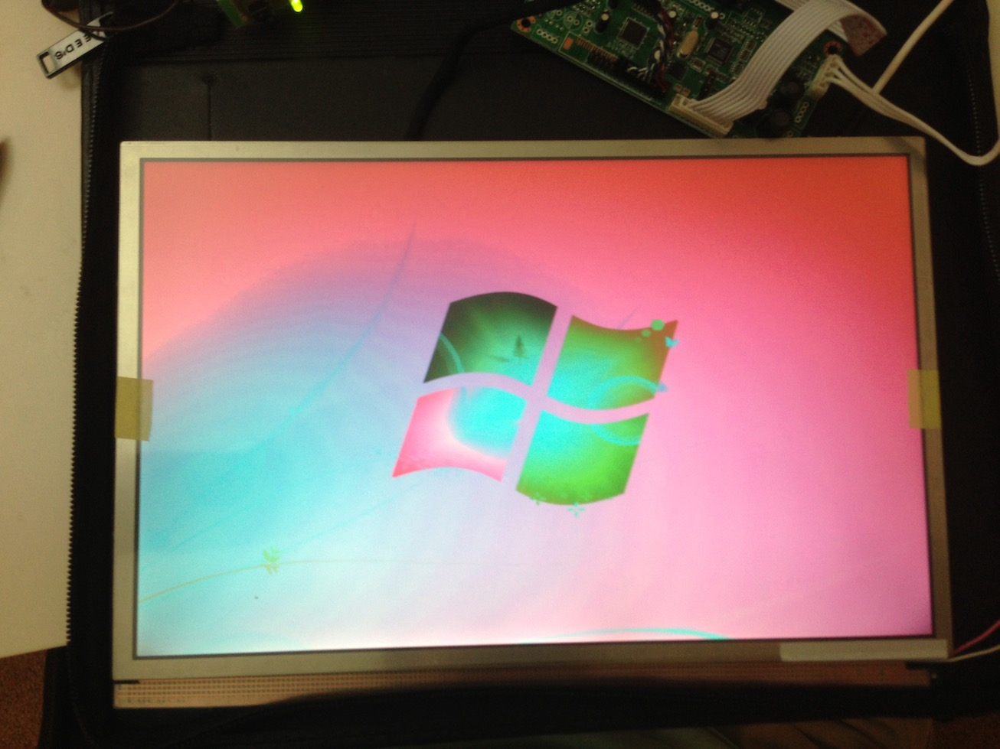
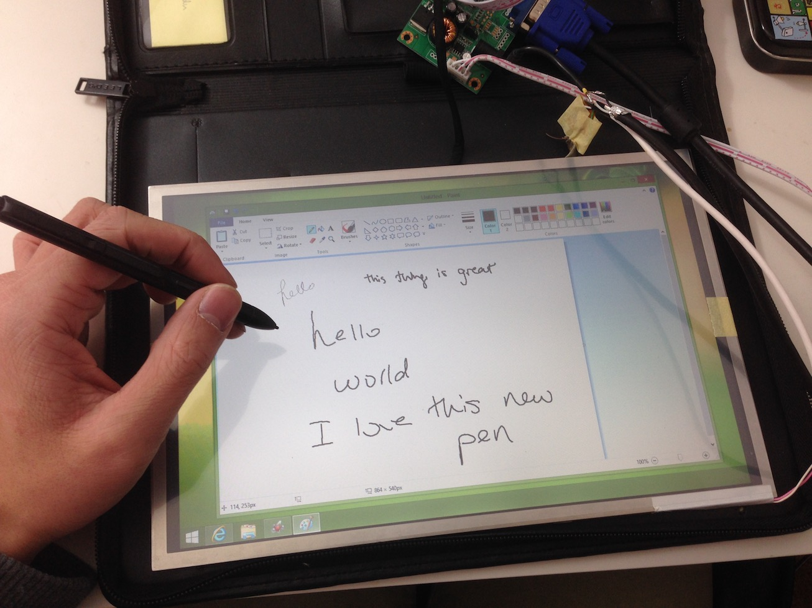

DIY Cintiq
One day in between classes, I was struck by a moment of inspiration. I always took notes in my college classes by hand but also lamented the amount of paper I used and had to carry around. I wanted to be able to store the notes on my computer since I used my computer for most of my homework and project work, and thus would have less to carry around. I brainstormed several ways to input handwritten notes into the computer - writing and scanning, buying a tablet PC, or buying a drawing tablet. I pondered the option of buying a drawing tablet as the best option given cost and convenience, but I felt that the discrepancy between moving your hand and having the cursor move separately on another screen would be hard for me to get used to. I then thought to myself, “Wouldn’t it be great if I could install the drawing tablet behind my laptop screen?”
Given that I use a 15” Macbook Pro, I found that the metal display case would interfere with the tablet’s digitizer signals. Because of the unibody construction, it would be difficult to open up the Macbook’s display to put a digitizer within the crawlspace. I then thought, “well, if I can’t modify the Macbook screen, maybe I can add it onto the back of the Macbook display?”
And thus, a new project was born. I researched cheap parts sourced from eBay sellers (mostly parts taken from old tablet PCs). I would attach the digitizer via USB and power the whole new screen with power from the Firewire port. The screen would be driven with a 3rd party LVDS to VGA converter, also found off of a seller on eBay. The whole construction was very similar in idea to Wacom's Cintiq, so I christened the new project the "DIY Cintiq." I purchased the parts and waited for them to arrive.
 When the digitizer arrived, the biggest problem to tackle was interfacing the digitizer control board with my laptop. To do this, I would have to somehow convert the digitizer control board signals to USB. Luckily, just as there is a subreddit for everything, there is a website for everything - I found an online forum named Bongofish that had a community of people who were all engaged with building their own DIY Cintiqs. Through the community, I determined that the control board of the digitizer I had put out signals similar to a serial connector, because it came from an early 2000's-era laptop. So I bought a serial/USB converter and found the pins to solder to it, with the help of the great people at Bongofish.
Unfortunately, no matter how much I tried, I couldn't get my laptop, under both OS X or Windows 7 to establish a connection with the digitizer board. After a few weeks of no results, I decided to find another digitizer.
The new digitizer I bought off of eBay naturally interfaced with its original computer via a USB connection, so the connection issues were mostly resolved. Windows 7 already had built-in drivers for USB digitizers, but unfortunately lacked the support for high-level pressure sensitivity.
I put this digitizer under the laptop display also procured on eBay, connected the display to the LVDS/VGA converter, and powered the whole thing up.
 ...holy crap. What just happened. I panicked for a bit and fiddled with the display's color settings, checked all the connections, and found nothing that seemed to be wrong. The display's built-in menu displayed colors correctly so I surmised that it was an issue with the LVDS/VGA converter. I ended up contacting the eBay vendor who sold me the display converter and arranged for a replacement.
I would end up waiting for 6 months.
After 6 long months of waiting, I got the new display converter and plugged it in. It worked! It all worked! The digitizer's accuracy suffered near the edges of the screen, where the metal bezel would interfere with the radio signals between the pen and the digitizer, but was reasonably accurate throughout the rest of the screen.
Soon after finishing this stage of the project, I was inundated by school work and never had the time to build a proper enclosure for the whole assembly. I do plan to do so once I get the time. Unfortunately, it's a bit late now for its intended function.